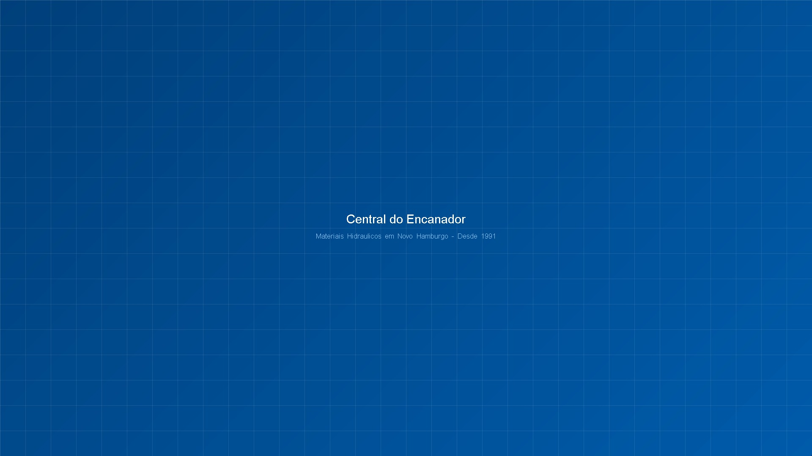
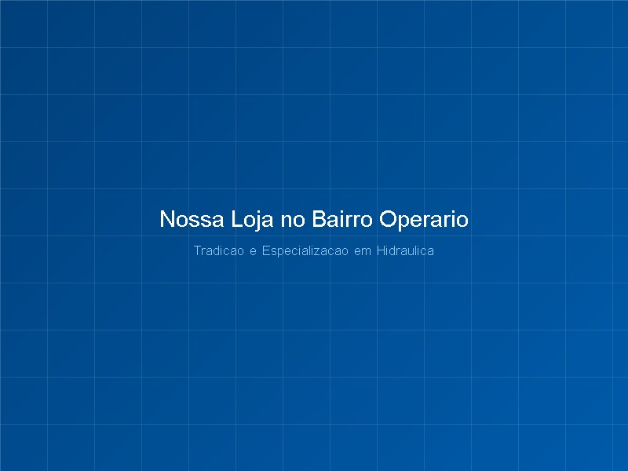
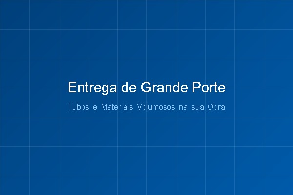

Materiais Hidráulicos em Novo Hamburgo | Central do Encanador
Encontre tubos, conexões, registros, válvulas e tudo o que você precisa para instalações hidráulicas, manutenção, obras e reformas.
Na Central do Encanador, você conta com atendimento especializado, variedade de produtos e a experiência de uma empresa que atua em Novo Hamburgo desde 1991.
Desde 1991
Tradição no mercado de materiais hidráulicos.
Mais de 35 anos
Conhecimento e especialização em hidráulica.
4,9 estrelas no Google
Mais de 120 avaliações de clientes.
Loja física em NH
Atendimento especializado e estacionamento.
Central do Encanador: Sua Loja de Materiais Hidráulicos em Novo Hamburgo
Desde 1991, a Central do Encanador atua no fornecimento de materiais hidráulicos em Novo Hamburgo, oferecendo soluções para instalações, manutenção, obras e reformas. Com mais de 35 anos de experiência, a empresa construiu sua trajetória com foco na especialização, variedade de produtos e atendimento próximo aos clientes.
Localizada no Bairro Operário, a loja atende encanadores, profissionais da construção civil, responsáveis por obras e consumidores que precisam encontrar os materiais adequados para diferentes necessidades hidráulicas.
Mais do que vender produtos, a Central do Encanador busca facilitar a escolha dos materiais, oferecendo orientação especializada para quem procura tubos, conexões, registros, válvulas, torneiras e componentes para reparos e instalações.

Materiais Hidráulicos, Tubos e Conexões em Novo Hamburgo
Na Central do Encanador, você encontra uma variedade de produtos hidráulicos para instalações residenciais, comerciais, manutenção e construção civil. Conheça nossas principais categorias e consulte nossa equipe para encontrar o material que você precisa.
Tubos e Conexões
Encontre tubos, conexões hidráulicas e acessórios para diferentes tipos de instalações e reparos. Trabalhamos com variedade de medidas e modelos para atender às necessidades de profissionais e consumidores finais.
Registros, Válvulas e Torneiras
Produtos para controlar o fluxo de água, realizar substituições e complementar instalações hidráulicas. Consulte nossa variedade de registros, válvulas, torneiras e acessórios para diferentes aplicações.
Peças para Encanamento e Manutenção Hidráulica
Encontre componentes para reparos, substituições e manutenção de sistemas hidráulicos em residências, empresas e condomínios. Nossa equipe auxilia na identificação das peças mais adequadas para cada necessidade.
Materiais Hidráulicos para Obras e Reformas
Soluções para quem está construindo, reformando ou realizando melhorias em instalações hidráulicas. Atendemos profissionais da construção civil, encanadores e consumidores que precisam de materiais para diferentes etapas da obra.
Atendimento e Orientação Especializada
Não sabe qual conexão, registro ou componente utilizar? Nossa equipe oferece orientação na escolha de materiais hidráulicos, considerando as características da instalação ou do reparo.

Entrega de Materiais Hidráulicos de Grande Porte
Precisa comprar tubos ou materiais volumosos e não tem como transportá-los? A Central do Encanador oferece a possibilidade de entrega de materiais hidráulicos de grande porte, facilitando o transporte para obras, reformas e instalações. Consulte condições e disponibilidade.
Tudo o que sua instalação precisa, em um só lugar.
Seja para um pequeno reparo ou uma obra completa, conte com a experiência da Central do Encanador para encontrar materiais hidráulicos adequados à sua necessidade.
Solicitar Orçamento pelo WhatsAppPor Que Escolher a Central do Encanador?
Mais de 35 Anos de Experiência
Desde 1991, a Central do Encanador atua no mercado de materiais hidráulicos, reunindo experiência e conhecimento para atender diferentes necessidades de instalação e manutenção.
Especialização em Materiais Hidráulicos
Nossa atuação é focada em produtos hidráulicos, permitindo oferecer um atendimento direcionado para quem precisa encontrar peças, conexões e componentes específicos.
Variedade de Produtos
Tubos, conexões, registros, válvulas, torneiras e acessórios para instalações, manutenção, obras e reformas em um único estabelecimento.
Atendimento Especializado
Nossa equipe auxilia profissionais e consumidores finais na escolha dos materiais, ajudando a identificar soluções adequadas para cada aplicação.
Loja Física com Estacionamento
Estamos localizados no Bairro Operário, em Novo Hamburgo, com estacionamento para proporcionar mais praticidade durante sua visita.
Facilidade para Transportar Volumosos
Oferecemos a possibilidade de entrega de tubos e materiais hidráulicos de grande porte, conforme condições e disponibilidade.
Como Comprar Materiais Hidráulicos na Central do Encanador
Conte o Que Você Precisa
Entre em contato pelo WhatsApp ou visite nossa loja em Novo Hamburgo. Informe quais materiais procura ou explique a necessidade da instalação, manutenção ou reforma.
Receba Orientação
Nossa equipe auxilia na identificação de tubos, conexões, registros, válvulas e outros componentes adequados à sua necessidade.
Consulte Produtos e Valores
Verifique a disponibilidade dos materiais, modelos, medidas e preços antes de finalizar sua compra.
Retire ou Receba
Você pode adquirir seus materiais diretamente em nossa loja física. Para tubos e produtos de grande porte, consulte as condições e a disponibilidade de entrega.
A Confiança de Quem Compra na Central do Encanador
Com atuação desde 1991, a Central do Encanador construiu sua trajetória atendendo profissionais da construção civil, encanadores e consumidores finais em Novo Hamburgo. Nossa reputação também pode ser acompanhada pelas avaliações de clientes no Google.
Estrelas no Google
Refletindo a satisfação e a confiança dos clientes
Avaliações Verificadas
Experiências reais registradas no Google Maps
Tradição & Especialização
Mais de 35 anos de dedicação em hidráulica
"Atendimento excepcional, os profissionais realmente entendem do assunto e me ajudaram a encontrar exatamente a conexão que eu precisava para o reparo."
Marcos Silveira
Avaliação no Google
"Excelente variedade de materiais hidráulicos com preços justos. Comprei tubos e conexões para minha obra inteira e a entrega foi super pontual e ágil."
Carlos Eduardo M.
Avaliação no Google
"Loja de muita tradição aqui em Novo Hamburgo. Fácil de estacionar, atendimento rápido e equipe técnica nota 10. Recomendo para todos os encanadores da região!"
Roberto Schuch
Avaliação no Google
Materiais Hidráulicos em Novo Hamburgo e Região
Sua Loja de Hidráulica no Bairro Operário
A Central do Encanador está localizada na Rua Onze de Junho, 1204, no Bairro Operário, em Novo Hamburgo – RS. Nossa loja atende encanadores, profissionais da construção civil e consumidores que procuram materiais hidráulicos para instalações, manutenção, obras e reformas.
Se você está em Novo Hamburgo ou na região e precisa de tubos, conexões, registros, válvulas, torneiras ou peças para encanamento, visite nossa loja ou entre em contato pelo WhatsApp para consultar produtos e disponibilidade.
Endereço
Central do Encanador
Rua Onze de Junho, 1204 — Bairro Operário
Novo Hamburgo – RS, CEP 93315-130
Horário de Funcionamento
- Segunda a sexta-feira: 08h às 11h30 e 13h30 às 18h
- Sábado: 08h às 12h
- Domingo: Fechado
Contatos
Telefone comercial: (51) 3594-7144
WhatsApp: (51) 99521-0707
Como Chegar
Perguntas Frequentes sobre Materiais Hidráulicos em Novo Hamburgo
Precisa de Materiais Hidráulicos? Fale com a Central do Encanador!
Não perca tempo procurando peças e materiais em diferentes lugares. Conte com a experiência de uma loja especializada em materiais hidráulicos em Novo Hamburgo desde 1991.
Entre em contato agora para consultar produtos, solicitar um orçamento ou verificar as condições de entrega de materiais de grande porte.
Endereço
Rua Onze de Junho, 1204
Bairro Operário, Novo Hamburgo – RS
CEP 93315-130
Canais Diretos
Telefone: (51) 3594-7144
WhatsApp: (51) 99521-0707
Instagram: @centraldoencanador
Atendimento
Seg a Sex: 08h às 11h30 e 13h30 às 18h
Sábado: 08h às 12h
Atendemos Novo Hamburgo e região